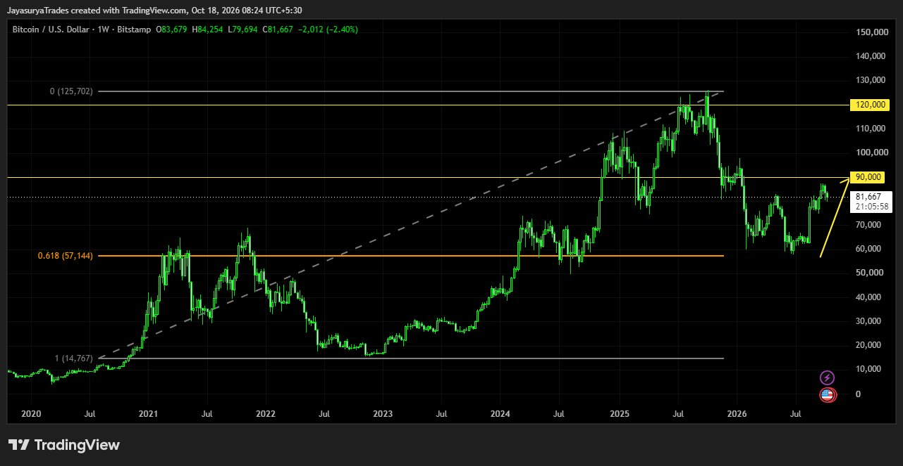
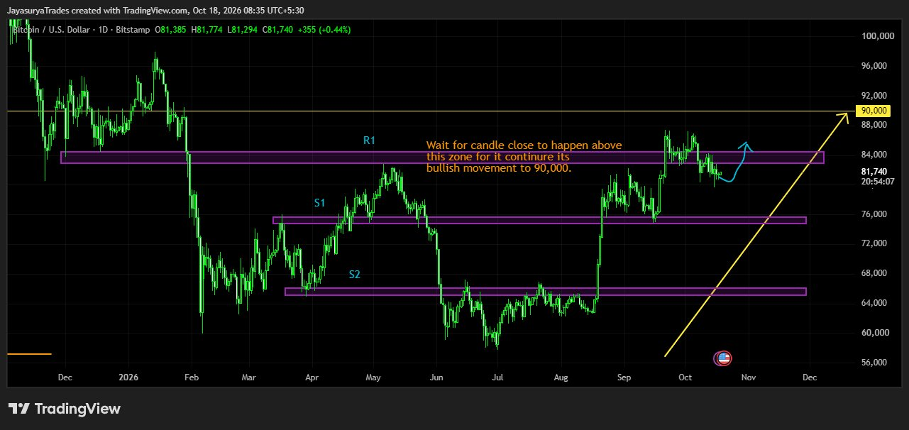

For this Sunday Market Focus, I am looking at Bitcoin / BTCUSD. On the weekly time frame, Bitcoin has retraced to the 61.8% Fibonacci level of the previous bullish move. This is a notable reaction area and may support the broader bullish scenario, but respecting this level does not guarantee that price will rise.
If the bullish structure continues, Bitcoin could potentially move toward and above its previous all-time high. That remains a possibility, not a certainty. Bitcoin is a cryptocurrency and carries substantial risk, so any investment decision should account for the possibility of losing the amount invested.
Weekly structure: Price has retraced to the 61.8% Fibonacci level of the previous bullish move
Broader scenario: Potential bullish continuation toward and possibly above the all-time high
Daily confirmation: Wait for a candle close above resistance R1
Potential move after confirmation: Toward 90,000
Approach: Respect the risk and wait for confirmation; the scenario is not guaranteed

Weekly Time Frame — 61.8% Fibonacci Retracement
The weekly chart shows Bitcoin taking a retracement to the 61.8% Fibonacci level of the previous bullish move. This level is often referred to as the golden ratio. In this analysis, the reaction at this level is a positive sign for the broader uptrend, but it does not by itself confirm the next move.
From here, Bitcoin may continue upward and could potentially challenge or break above its all-time high. However, that outcome may or may not happen. I will treat it as a possible scenario and continue to observe how price develops rather than assume that the retracement guarantees a rally.
Daily Time Frame — Wait for R1 Confirmation
When we move down to the daily time frame, the chart shows a resistance zone marked R1. For a potential continuation toward 90,000, I want to see a daily candle close above this resistance zone. Until that confirmation appears, I will not treat the move as confirmed.
If a daily candle closes above R1, a potential buy setup toward 90,000 can then be assessed. This is the first trade scenario to watch. The next plan should depend on what the market reveals after that move; the target is not guaranteed.

Key Levels to Monitor
For traders, the daily chart marks R1, S1 and S2 as the key levels to watch over the coming days and weeks. The chart-marked zones should be monitored as price develops. No numeric values for S1 or S2 are stated here; use the levels shown on the chart.
For Investors — Consider the Risk
From a broader market-structure perspective, the weekly 61.8% Fibonacci retracement is a potentially constructive sign while the overall upward scenario remains in view. However, Bitcoin is a cryptocurrency and its price can move sharply in either direction. A technical level cannot remove that risk or guarantee that an investment will recover.
Only consider risking money that you can afford to lose. The weekly retracement is one part of the analysis, not a promise of a move above the all-time high. Make an independent decision based on your own risk tolerance and plan.
For Traders — Confirmation Before Entries
Before Considering a Buy Setup
Wait for a daily candle close above R1. If that close occurs, the potential move toward 90,000 can be assessed as a possible setup. Avoid treating a brief move above resistance, without the required daily close, as confirmation.
Monitor S1 and S2
S1 and S2 are the support levels marked on the daily chart. Watch how price behaves around these areas in the coming days and weeks. The next decision should depend on the market's actual response rather than an assumed outcome.
Keep the Scenarios Conditional
The weekly chart supports a possible broader bullish scenario after the 61.8% retracement, while the daily chart provides the R1 confirmation condition for a potential move toward 90,000. If price does not confirm above R1, the buy scenario remains unconfirmed and the analysis should be reassessed as new price action develops.
Key Takeaways
- Bitcoin has retraced to the 61.8% Fibonacci level on the weekly time frame.
- This reaction may support a broader bullish scenario, but it does not guarantee a move higher.
- Bitcoin could potentially move toward and above its all-time high, but that outcome remains uncertain.
- On the daily time frame, wait for a candle close above R1 before assessing a potential buy setup.
- If the daily close above R1 is confirmed, a potential move toward 90,000 can be watched.
- R1, S1 and S2 are the key chart-marked levels for the coming days and weeks.
- Cryptocurrency investing carries substantial risk; only risk an amount you can afford to lose.
My broader view remains focused on the weekly 61.8% Fibonacci retracement and the potential for bullish continuation. For a shorter-term trade, the important condition is a daily candle close above R1 before considering the scenario toward 90,000.
Respect the weekly structure.
Wait for the daily R1 close.
Manage risk and confirm before acting.
One day. One market. One focused analysis.
Levels. Structure. Scenarios. Confirmation.
No hype. Just how the market behaves.
Watch. Wait. Confirm.
Risk Disclaimer
This analysis is provided for educational and informational purposes only and
should not be considered financial advice or a recommendation to buy or sell
any financial instrument.
Trading involves substantial risk. Always conduct your own research and follow
your own trading plan and risk-management rules.